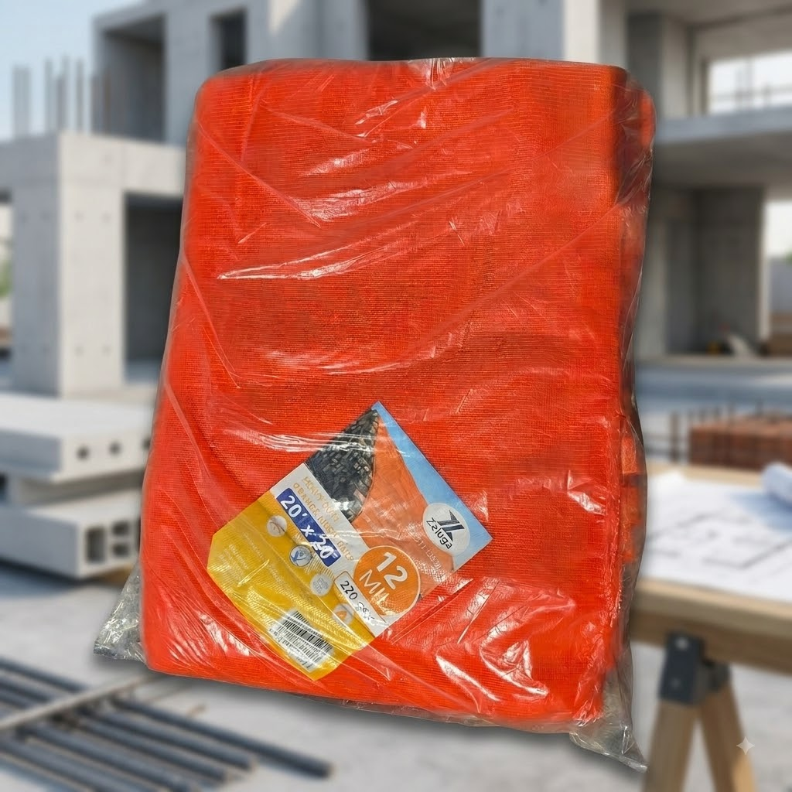
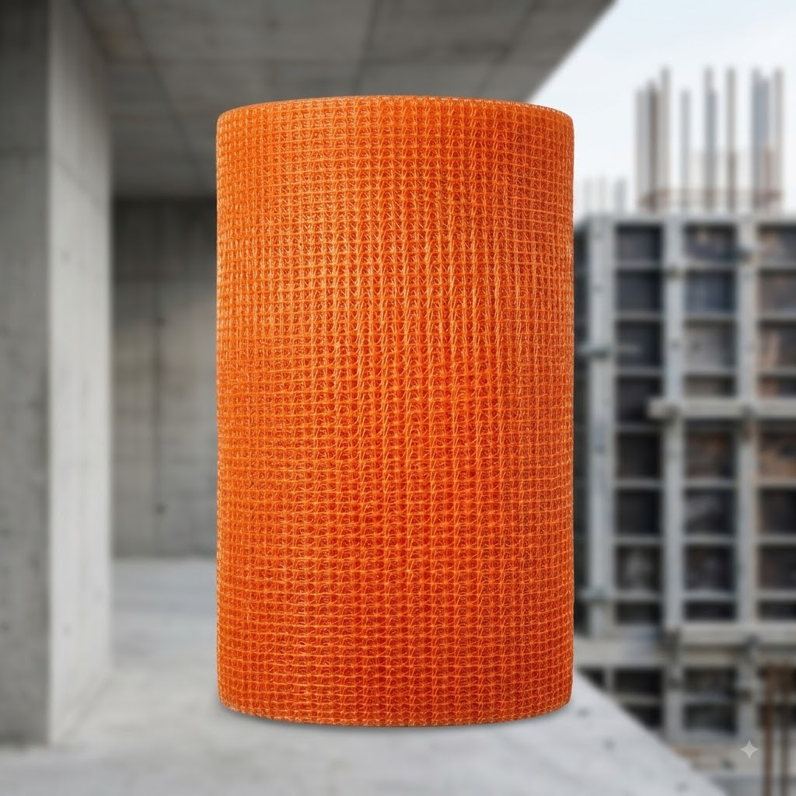

Malla de seguridad naranja Zeluga de uso rudo 12 mil 220 GSM
$130.00 USD
🏗️ Malla de seguridad naranja Zeluga — protege tu obra y a tu gente
Tejido de uso rudo de 12 mil de grosor y 220 GSM que deja pasar el aire pero detiene el escombro. Tratada contra rayos UV para que no se cristalice al sol y con ojales de bronce anticorrosivo en todo el perímetro.
✅ 12 mil de grosor y 220 GSM
✅ Tratada contra rayos UV
✅ Resistente al agua
✅ Ojales de bronce anticorrosivo
✅ Costura perimetral reforzada
Perfecta para cubrir andamio, contener escombro y dar sombra en obra. 💪
Pedir por WhatsApp